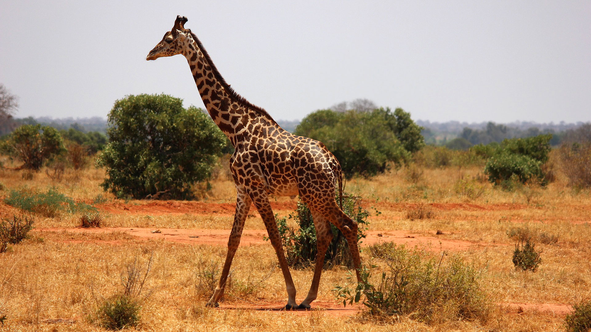

Overview
Giraffes are known for their long necks, spotted coats, and gentle nature. They are herbivores and live in African savannas.
Habitat
Giraffes are found in open woodlands and savannas across Africa, especially in countries like Tanzania and Kenya.
Diet
They eat leaves, flowers, and fruits from tall trees, especially acacias. Their long necks help them reach high branches.
Fun Fact
A giraffe's tongue can be up to 50 cm long and is dark-colored to protect it from sunburn!